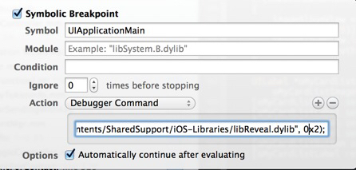

对于iOS开发，reveal和FLEX应该都不陌生，相比于reveal，FLEX堪称单机版reveal，虽然没有reveal直观，但更加方便，最新版本的FLEX增加了很多网络调试的功能，使得不仅仅应用于UI部分。
在使用上，reveal只需把framework动态库放到工程中，然后在同一wifi下的Mac下查看即可。
FLEX是需要将代码集成到工程中，通过某种启动方式，调出其FLEX-Explore，因此使用来耦合行较高，添加较复杂。
本文将一方面介绍将FLEX也打包成为framework，采用和reveal相同的引入方式进行插件化的添加；另一方面，介绍如何采用reveal和FLEX在越狱下分析别人的UI布局（FLEX还可以干更多好玩的事情）；最后还写了一些动态注入调试的方法，更为方便使用。
1、将FLEX打包为framework动态库
生成动态库的方法在我的另一篇文章有描述，此处不再赘述。
新建framework后，将所有FLEX代码从github中clone下来，把其中class目录copy进framework工程，新建prefix，把UIKit和Foundation添加今prefix。在framework的同名oc文件中增加下面的代码，这些代码会在应用启动的时候给应用的主window加一个三指下滑的手势，用于调出FLEX。
.h文件
@interface Flex : NSObject
{
BOOL isInit;
}
@end
//! Project version number for FLEXLIBTest3.
FOUNDATION_EXPORT double FLEXLIBTest3VersionNumber;
//! Project version string for FLEXLIBTest3.
FOUNDATION_EXPORT const unsigned char FLEXLIBTest3VersionString[];
.m文件
#import "Flex.h"
#import <UIKit/UIKit.h>
#import "FLEXManager.h"
@implementation Flex
- (id)init
{
self = [super init];
if (self) {
isInit = NO;
[[NSNotificationCenter defaultCenter] addObserver:self
selector:@selector(appLaunched:)
name:UIApplicationDidFinishLaunchingNotification
object:nil];
}
return self;
}
- (void)appLaunched:(NSNotification *)notification
{
if (isInit) {
return;
}
NSLog(@"======================= libFlex dylib show ========================");
UIWindow* window = [[UIApplication sharedApplication].delegate window];
if (window) {
UISwipeGestureRecognizer* ges = [[UISwipeGestureRecognizer alloc]initWithTarget:self action:@selector(swipeGestureAction:)];
ges.direction = UISwipeGestureRecognizerDirectionDown;
ges.numberOfTouchesRequired = 3;
[window addGestureRecognizer:ges];
isInit = YES;
}
}
- (void)swipeGestureAction:(UISwipeGestureRecognizer*)ges
{
[[FLEXManager sharedManager] showExplorer];
}
@end
static void __attribute__((constructor)) initialize(void)
{
NSLog(@"======================= libFlex dylib initialize ========================");
static Flex *entrance;
entrance = [[Flex alloc] init];
}
2、越狱机器中，使用reveal和FLEX分析其它应用
reveal在安装时就提供了它的dylib文件，FLEX可以根据我在另一篇文章的方法生成其dylib文件，入口类写法和上面的代码一致。
将.dylib上传到设备的/Library/MobileSubstrate/DynamicLibraries（iOS7以后的动态加载库位置）,导入前需要先安装apple file插件。
重启机器或者在ssh下"killall SpringBoard"。可以看到reveal或者FLEX已经启用了，由于reveal会在该app启动一个server导致机器变慢，而上文中FLEX的添加方法在iPad下会和SpringBoard造成冲突而不能正常启动，因此强烈建议添加filter bundleid，只给白名单内的app动态注入。该plist的书写方法如下图，文件名必须保持和dylib名称一致，导入位置和dylib位置相同。

3、模拟器调试，动态注入dylib
动态注入的好处在于：不需要修改proj文件，真正的即插即用。
此处应用了lldb的Symbolic断点和unix dlopen的动态加载特性，如下图：

指令为：expr (void*)dlopen(“/Applications/Reveal.app/Contents/SharedSupport/iOS-Libraries/libReveal.dylib”, 0x2);
参考
- 模拟器下动态注入dylib：http://support.revealapp.com/kb/getting-started/integrating-reveal-load-reveal-without-changing-your-xcode-project
- 使用reveal动态查看所有越狱app ：http://c.blog.sina.com.cn/profile.php?blogid=cb8a22ea89000gtw
- 如何配置flex的启动： http://itony.me/774.html